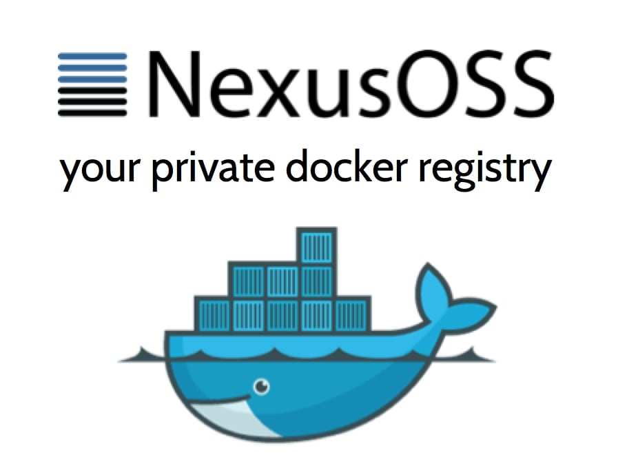
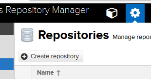
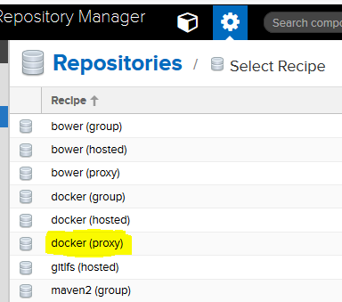
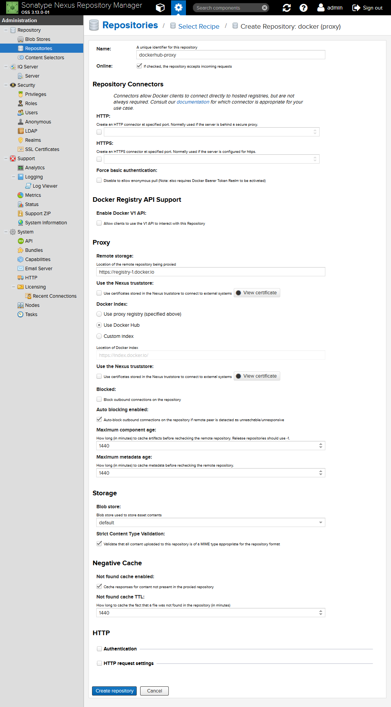
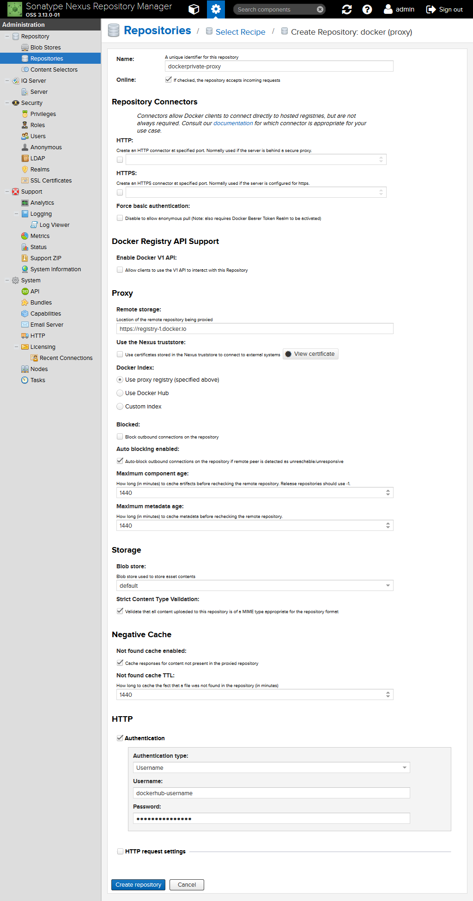
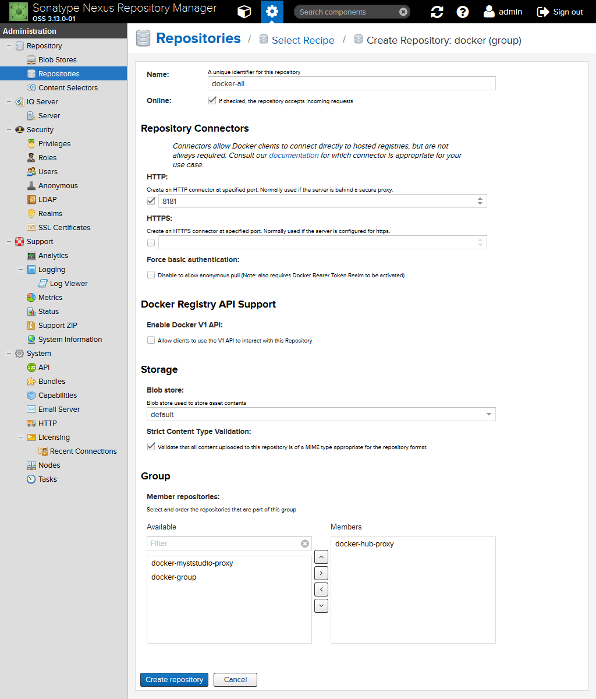
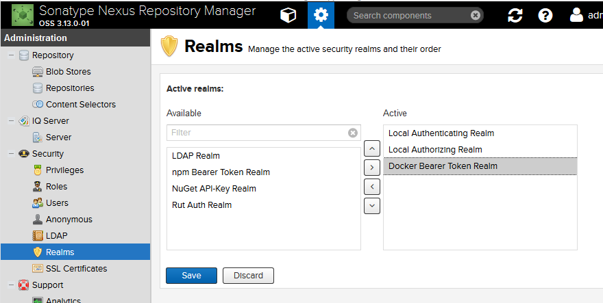
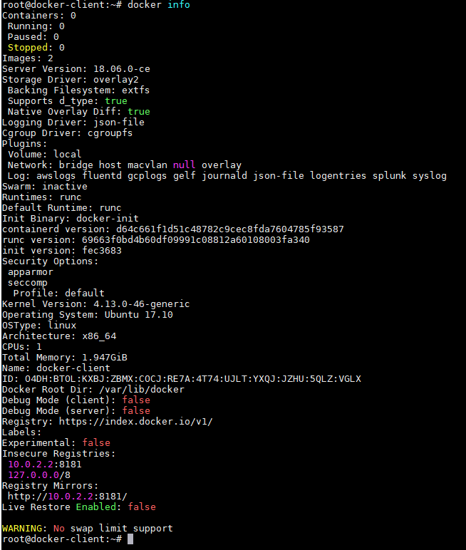
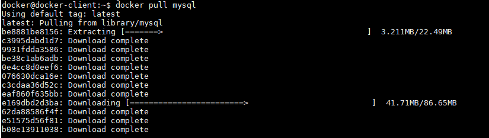
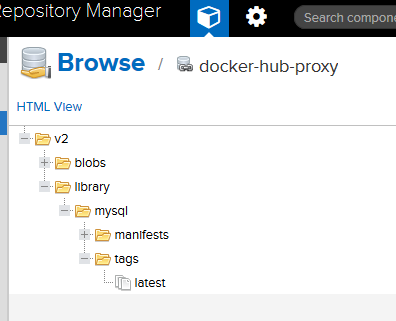

使用 Nexus OSS 为 Docker 镜像提供代理/缓存功能

在企业环境中工作，无论是商业组织还是非商业组织，你会发现在互联网上获取信息存在着种种限制。
通常，服务器会运行在一个控制非常严格的环境中并且不能从互联网中获取资源以确保获取的所有资源都是安全的。
当你要使用一些公开的可获取的 Docker 容器时这会变得更麻烦，你会用到“古法”偷偷摸摸的把 Docker 镜像放到你的主机上。
对我而言，事情甚至更加困难。我需要一个通过第三方访问的（受限的）私有仓库。所以现在我该怎么办呢？
幸运的是，目前市面上有好几个可以作为代理或者‘拉入式缓存’的 Docker Registries，这正是我们所需要的。用来作为代理或者缓存的主机需要互联网的权限，而且只有这一台机器需要。其他所有需要获取 Docker 镜像的主机通过这台机器访问互联网，该机器同样很方便的缓存了数据这样只需要检索一次就可以更快的分发到内部局域网的主机上。
诸如 Sonatype Nexus、JFrog Artifactory、甚至 Docker Registry 都提供这些确切的功能，以及一些功能。这里我将会使用 Sonatype Nexus 完成所有的设置，主要的功能在 OSS 版本中可以使用（Artifactory 功能则是 Pro 版本的一部分功能）。
这篇文章将会向你展示怎样配置 Nexus OSS 来实现类似 Docker Hub ，私有仓库或者两者的结合那样的拉入式缓存功能。同样会向你展示怎样配置 Docker 客户端从而在检索镜像的时候能够使用到你的缓存。
需要的软件
Sonatype Nexus OSS 3.15.0（或更高版本）
Docker 17.09（或更高版本）
我设置了两个基于 Ubuntu LTS 版本的虚拟机，一个运行了 Sonatype Nexus 3.14.0 的 Docker 容器（这个机器称作 docker-host），另一个只运行 Docker（称作 docker-client）。
请注意一些网络配置或许跟你的配置不一样（例如 IP）但是方法是相同的。同样，请注意那台运行 Nexus OSS 的机器（docker-host）需要有访问互联网的权限。
[更新，2018年10月] 请使用 Nexus 3.15 或者更高版本因为从 3.14 到 3.15 中间修复了多个 CVE 的漏洞问题。
配置 Nexus OSS
我们在 Nexus 中至少配置 3 样东西，给仓库命名，以及一些安全配置。请记住在公司中不要按照这些方法来做，因为可能会考虑到一些性能问题，比如修改 Blobstore 配置。
为 Docker Hub 添加 Docker Proxy Repository
使用有管理员权限的账号登录到你的 Nexus 实例，转到 Admin 页面。点击 Repository -> Repositories，然后点击 ‘Create repository’。

选择‘docker（proxy）’然后开始配置。

你需要为这个 Proxy 添加一个唯一的名字，确保它是 ‘Oneline’ 状态。
为了避免我们在危险的边缘试探，我们不会为这个 Repository 提供 V1 API（勾掉 ‘Enable Docker V1 API’ 选项），但我们是允许匿名访问的权限的。
这非常重要，所以再次强调下:
勾掉 ‘Force Basic Authentication’。
这会允许我们的 Docker Clients 在不需要提供凭据的前提下访问我们的 Repository。这是最简单的方法了！
在 ‘Proxy’ 下面输入如下信息:
Remote storage: https://registry-1.docker.io/
Docker Index: Use Docker Hub
所有的配置信息如下所示。

为 Private Repository 添加 Docker Proxy Repository（可选）
该部分是可选环节，这要取决于在 Docker Cloud 中怎样访问你的私有仓库。
仍旧是创建一个唯一的名字，设置为 ‘oneline’，禁止 V1 API，允许匿名访问，在 ‘Proxy’ 下面输入如下信息:
Remote storage: https://registry-1.docker.io
Docker Index: Use proxy registry
不同的地方是在页面底部的 Authentication-部分，你需要在该位置输入可以访问 Docker Cloud 私有仓库的用户名跟密码。
所有配置如下所示。

为 Docker Repository 添加 Group
组可以为多个仓库提供一个单独的权限。这是 Docker 所不具备的功能，当 Docker Client 尝试访问 Docker Hub 时，这是唯一访问的入口。
当我们不想让它只包括 Docker Hub 还想包括其他我们想要的仓库（例如 私有的 Docker Cloud 仓库、我们内部局域网托管的 Docker 仓库，等等）时，所有检索到的 Docker 镜像都可以通过 Nexus 传输，不需要 Client 知道去哪里查看哪个镜像。
Repository Group 仅仅是一个 Repositories 的集合，但是我们需要 Docker Client 能够与它通信。
添加一个唯一的名字，设置为 ‘oneline’，禁用 V1 API，允许匿名访问权限。
我们需要配置一个 Repository Connector，它为 Repository Group 存储的内容提供了可访问的端口。我选择使用 8181（Nexus 默认端口为8081）并且只配置 HTTP 因为我真的太懒了不想配置 HTTPS 的了。:)
你需要选择 Docker Repository（一个托管的仓库或者一个代理亦或为另一个组）作为这个 Group 需要的 Members，然后保存配置。
所有的配置如下所示。

配置安全设置
为了确保匿名权限可以正常访问我们的仓库，我们需要在 Nexus 中添加‘Docker Bearer Token Realm’ 到 Active Realms 中。
切换到 Administrator -> Scurity -> Realms 然后选择 ‘Available’ Realms 列表中的 Realm。点击右侧的箭头按钮然后保存。

齐活儿！
配置 Docker Client
现在我们的 Nexus 实例已经成功配置了，需要确保我们的 Docker Client 可以从这个地方获取所有的 Docker 镜像，而非互联网。
这需要我们配置 Docker Client Daemon，能让它们将 Nexus 作为镜像源。还有，因为它使用的是 HTTP 而非 HTTPS 我们需要 Docker 能够理解该协议是可以的并且可以通过 Nexus 查看镜像。
使用 root 用户，创建或者是编辑下面的文件: /etc/docker/daemon.json
{
"insecure-registries": ["10.0.2.2:8181"],
"registry-mirrors": ["http://10.0.2.2:8181"]
}
需要注意的是，这会跟你配置的有较大差别，因为我运行的虚拟机。这个 IP 是我主机上 VM1 出来映射用来解决 VM2 上的问题的 IP。
如果需要的话，你可以安全的将你的 主机名或者 IP 替换为 10.0.2.2。请做全量替换。
文件保存后，Docker 需要重启。如果成功: docker info 命令信息会如下图所示:

Insecure Registries:
10.0.2.2:8181
127.0.0.0/8
Registry Mirrors:
http://10.0.2.2:8181/
大功告成！
现在你可以在 Docker Client 不需要访问互联网的前提下从 Nexus 获取 Docker 镜像了。
docker pull mysql

它会在 Nexus 的 Docker Group Repository 中显示出来，你会看到缓存的 blobs，标签和清单。
